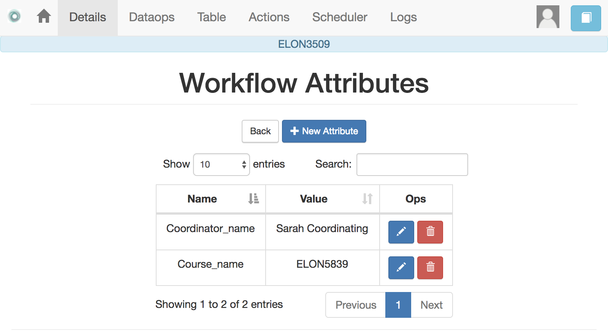
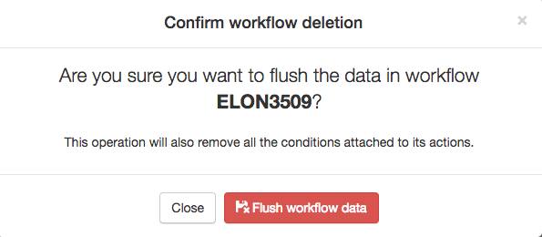
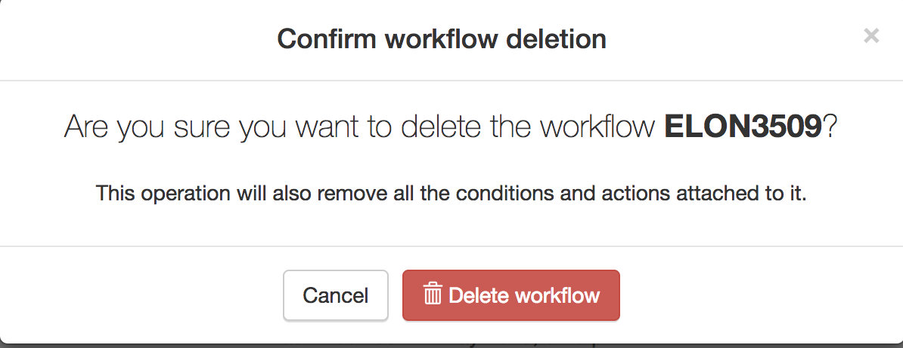

Workflow Details¶
“The details are not the details. They make the design” – Charles Eames
After selecting a workflow to manage, the details page appears with a lot of information about operations, structure of the data, information about the columns, etc. The top of the screen contains the information shown in the following figure.
The top of the page now includes links to additional menus with operations to perform over the workflow (some of them will be available depending on your user profile). Under the top bar the application shows the name of the workflow selected for manipulation. Under the title Workflow Details there are buttons to access the following operations:
- Add a new column
Opens a dialog to create a new column in the table. It requires the name, type of column, a comma separated list of allowed values (optional), the position of that column, and a value to assign to all cells in the column (optional).

- Attributes
This is simply a dictionary of pairs
(name, value)so that when anameappears in a personalized text, it is replaced by thevalue. The main use of these attributes is when a value has to appear in various locations and you may want to change all its occurrences. For example, the instructor name could be included as one of the attributes so that if it changes, modifying the attribute is the only required step.
- Share
A screen to make the workflow accessible to other users. You are supposed to know the user identification (there is no search functionality available).

- Export
This functionality allows you to take a snapshot (or a picture) of the content of the workflow and store it in a file for your records. You may select which actions are included in the exported file

The menu offers you the possibility of exporting only the data, or the data and the action in the workflow.
- Clone
- This function creates a new workflow in the platform by duplicating the data, actions and conditions of the current workflow.
- Rename
This functionality allows to change either the name or the description of the workflow.

- Flush data
This operation deletes all the data attached to the workflow, but preserves the workflow structure (that is, the name and the description only).
Given the destructive nature of this operation the platform requires you to confirm this step.
- Delete
Operation similar to the previous one, but now the whole workflow is deleted and therefore unselected. If executed, the platform will go back to the list of workflows as this one is no longer available for operations.
As in the previous case, the platform asks for confirmation before carrying out the delete operation.
Under the buttons to carry out these workflow operations the platform shows a summary of the information contained in the workflow.
The Columns¶
The data in a workflow is stored in a structure called a table that is made of rows and columns (similar to a spreadsheet). The information about the columns is included in a table in the workflow details page.

Each column has a position, name (cannot contain the quotes ‘ or “), a type (one of integer, string, double, boolean or date/time), a field stating if the values of that column are unique for the rows, and operations. When a column is marked as Unique, it means that all the values it contains are different and unique for each row. Think of a column containing a passport number. Such number is different for every person. There could be several columns with this property. The application detects automatically this property in a column. You may edit and change this properly as long as the values are the adequate ones (they satisfy the uniqueness property if you try mark a column as unique). The operations available over columns are:
- Edit
It allows you to change the name, type, unique and values allowed in the column. If you are changing the column type, the application will check if the existing values are valid. If not, the change will not be allowed. Similarly, if the Unique property is selected, the application checks the values to make sure this property is satisfied.

The column may also have a validity window defined by two date/times. This validity is used when executing action in tasks.
- Clone
- Clones the column in the workflow changing its name adding the prefix Copy of to the name.
- Delete
- Deletes the column from the workflow. If there are conditions inside actions out that use this column, those conditions will be removed from the action.
- Stats
- In addition to these operations, OnTask also offers a visualization of the values in a column. x